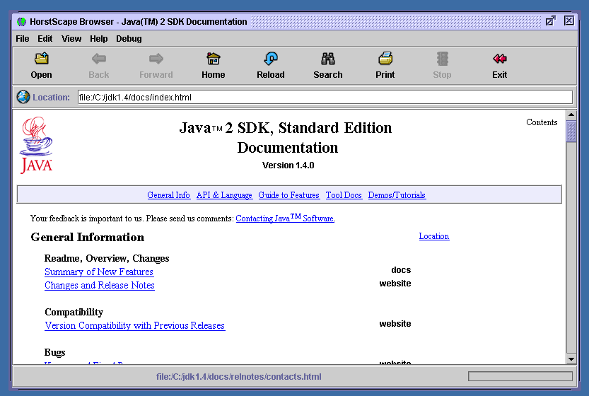

Jesktop.net - Free/Open Applications
HorstScape

Jesktop.net - Free/Open Applications | |
HorstScape

Note - HTMLWindow.jar has been obsoleted from Horst Hiestermann's site (June 2001). You can't download the component any more.... HorstScape is a browser also ported during the summer of 2000 to PJE. Horst Heistermann's excellent HTMLWindow api is wrapped by his own demonstration browser "HorstScape". We took the source for the browser and with his permission forked the browser source so that we could get it working inside PJE and now Jesktop. HTMLWindow is commercial software (we hope Horst makes his million from it as it's very good). As such, it is unsuitable for a long term choice of browser inside Jesktop. We don't distribute the HTMLWindow jar as it is commercial, but there is a readme if you want to see it running. In January 2001, Horst released a new product called WebWindow that is commercial and is doubtless based in his previous body of work. We wish him every sucess with that. LicenseHorst's Browser source is free for reuse, but the rendering component is (or was) commercial. Main HorstScape SiteProject home site : http://home.earthlink.net/~hheister/ |
Copyright (c) 2001 The Jesktop Project All rights reserved.
|
|